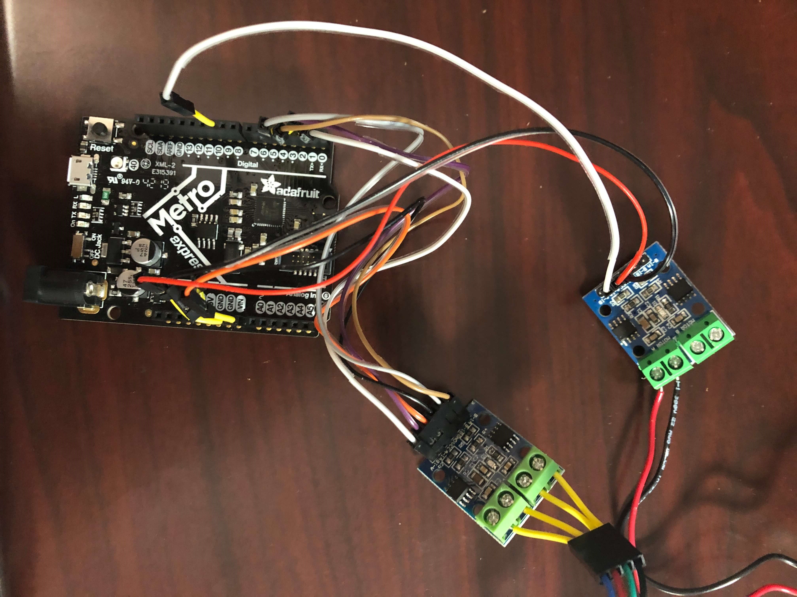
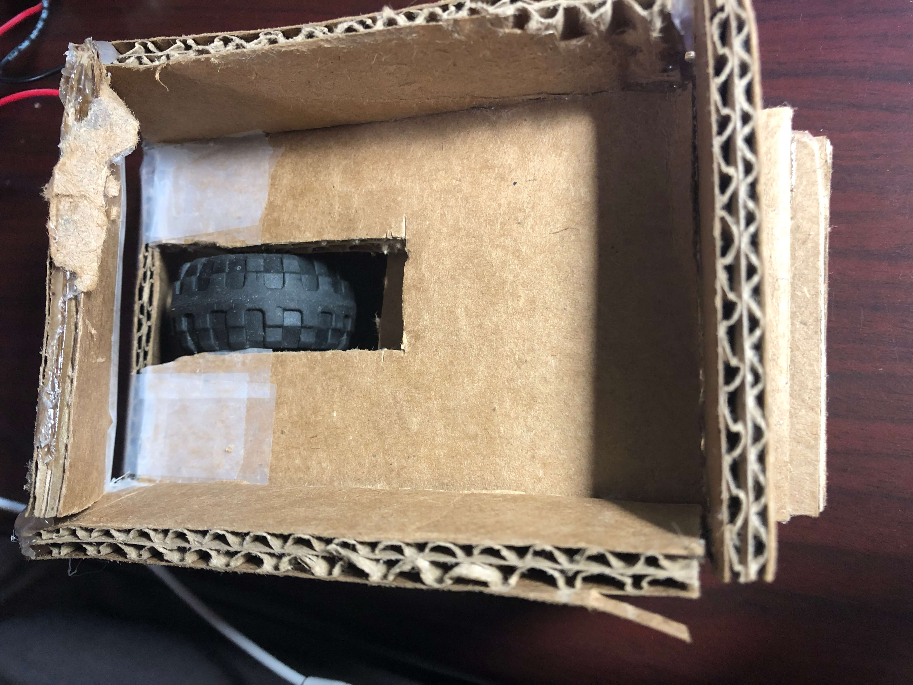
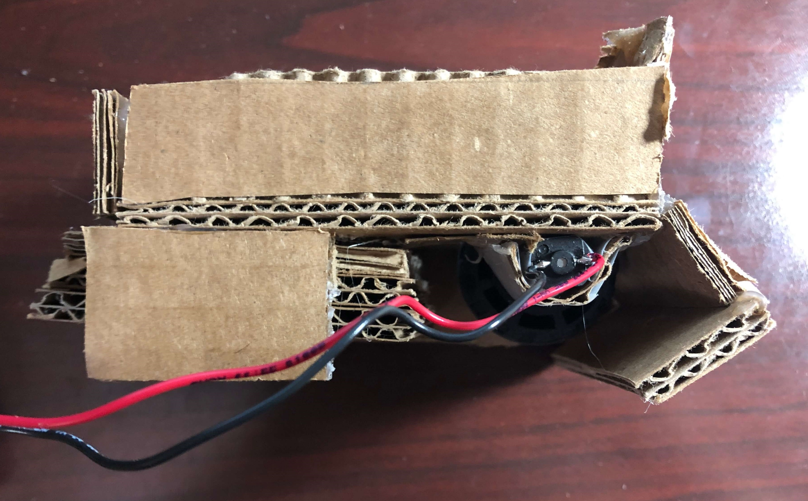
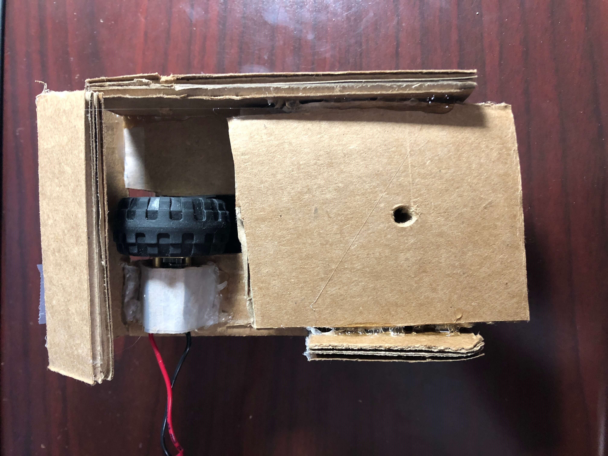
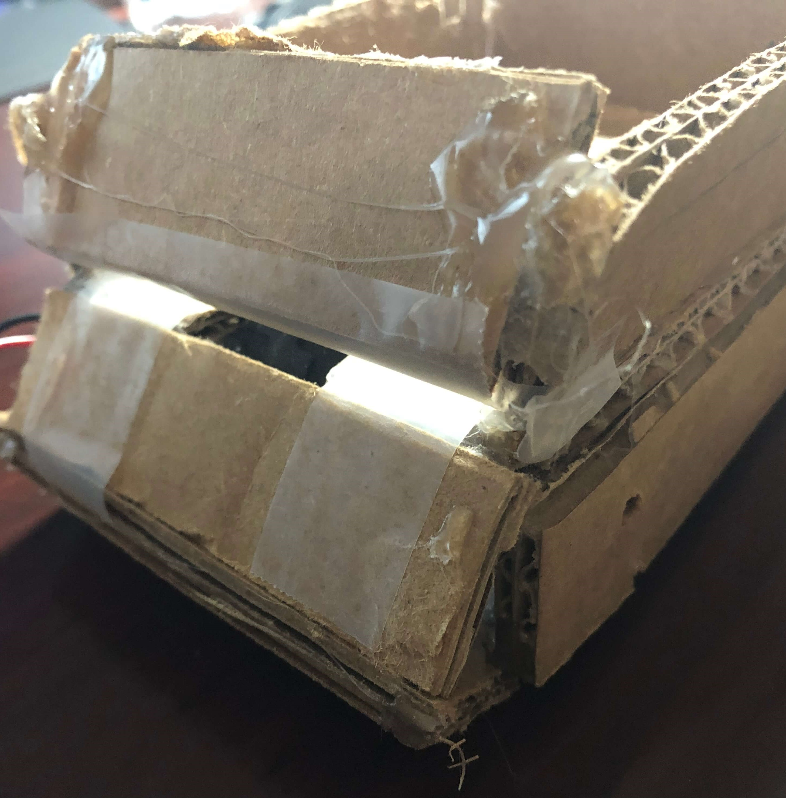
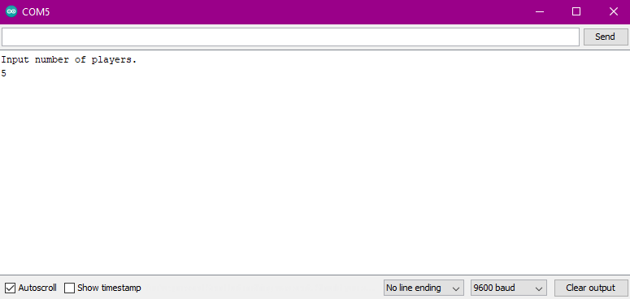

For today's assignment, I decided to build a machine that could automatically deal cards to a certain number of players based on the number of players entered into a serial monitor. The machine was supposed to turn a specific amount, distribute one card, turn again, distribute another card, etc until the 52 cards had been completely distributed. Before getting into the specifics of it, here's a video of the machine in action distributing cards to five players (albeit with the card dealer not mounted on the stepper motor due to difficulties with having enough torque to rotate the card dealer):
Admittedly, I haven't really used the motors in our kit that much except for during class since my final project doesn't utilize motors at all. For my assignment, I had to use both a DC motor and a stepper motor. The DC motor was run through a motor driver and controlled by pin 10 using 3.3 V. The stepper motor was attached to pins 2-5 and powered by the VIN pin. Here's a (messy) picture of the circuit.

My first step in this assignment was to create a box that would hold the cards and distribute them. To do this, I measured the size of a common deck of cards and cut out a piece of cardboard that was slightly larger than the dimensions. I then cut out strips of cardboard that were 2 cm wide which I used as the sides of the box.
To create the mechanism which would shoot out cards to deal them, I looked at some videos of cash guns on YouTube and found that they all worked by using a wheel on the bottom of the compartment that would "grab" onto the cash and move it forward and out of the gun. I followed these examples and cut out a space big enough to fit a wheel in the bottom of the box, which would be run by a DC motor.

Since I was worried about directly hot-gluing the DC motor onto the base, I taped it to a piece of bendable cardboard and hot glued the sides of that cardboard onto the base. I was worried about the wires from the DC motor poking out, so I tried to turn them to fit inside the base, but unfortunately I accidentally broke the soldering of one of the wires of my DC motor! I don't know how to solder yet to repair the broken connection, but hopefully I can use the soldering skills that I need for my final project to fix the motor later on. Luckily our kit came with 2 DC motors, so I was able to switch to the other one and make sure that I was more gentle.
In order to make sure that the wheel didn't catch on any other surfaces on the bottom where it was sticking out, I cut out some more cardboard strips and hot-glued them to the bottom of the base. Here's a side view of the completed card dealer.

In order to attach the stepper motor, I cut out three squares of cardboard and hot-glued them together. Then I drilled a hole through them that was large enough to fit the shaft of the stepper motor and hot-glued them together. Unfortunately, when testing out the stepper motor, I found that it didn't have enough torque to turn my load, so I had to take the load off.

Nevertheless, before I started on the turning mechanism, I wanted to make sure the card dealer would actually shoot out cards. By running the DC motor on full speed, I experimented with various designs for the front output of the card dealer to ensure that cards would come out one at a time. In order for the cards to actually slide out, I created a downward slope on the bottom and a piece of cardboard on top that was angled inwards. On the bottom slope, I found that the cards were getting caught due to a small gap between the two pieces of cardboard, but I fixed that by putting some tape between them.

Now onto the programming! I used the included Stepper library and setup my stepper motor on pins 2-5. I set pin 10's mode to output for the DC motor and made sure that the motor was off at the beginning. Then, I started the serial monitor, which would ask you to input the number of players once it was ready.

When the serial monitor received an integer input, it would find the integer in bytes and set that equal to a variable called divider. A while loop would continuously run, which would set the DC motor at full speed for the time that it took to give out one card (about .6 seconds) and then turn the DC motor off as the stepper motor went a certain number of steps, equal to the total number of steps in one revolution divided by the divider variable which represented the number of players. Here's the code:
#include // initialize the stepper library
const int stepsPerRevolution = 200; //200 for our steppers.
Stepper myStepper (stepsPerRevolution, 5, 4, 3, 2); // pins 2-5 connected to stepper motor
void setup() {
myStepper.setSpeed(60);
pinMode(10, OUTPUT); //pin 10 connected to DC motor
analogWrite(10, 255);
Serial.begin(0); //This is the USB serial.
Serial.setTimeout(20); //Set wait time for serial data to 20ms (default 1 sec).
while (!Serial) {
; //Wait until Serial wakes up
}
Serial.println("Input number of players.");
}
void loop() {
while (!Serial.available() ) {
analogWrite(10, 255);//Loop and keep motor turned off until there is a serial character received.
}
while (Serial.available()) { //Receive bytes and parse them into an integer.
int divider = Serial.parseInt(); //this function finds the integer in the bytes, ignoring commas, spaces, returns, etc....
int distribution_time = 500; //time to distribute one card
Serial.println(divider);
while (divider > 0) {
analogWrite(10, 0); //DC motor runs on full speed to distribute one card
delay (distribution_time);
analogWrite(10, 255); //DC motor is shut off
myStepper.step(stepsPerRevolution / divider); //stepper motor rotates to next player
}
}
}
I did attempt to use the AccelStepper library to give the stepper more torque so that I would be able to mount the card dealer on top, but I couldn't figure out how to use the functions in the library in the limited time I had before the assignment was due. I also didn't want to connect my microcontroller to a larger power source to give the stepper motor more torque through the VIN pin since many people mentioned that this caused their motor drivers to burn out. The card dealer isn't perfect since it still distributes more than one card to a player occassionally. Hopefully in the future, I can figure out a solution to realize my ideas for this card dealer, but I am still satisfied that the components work prety well separately.